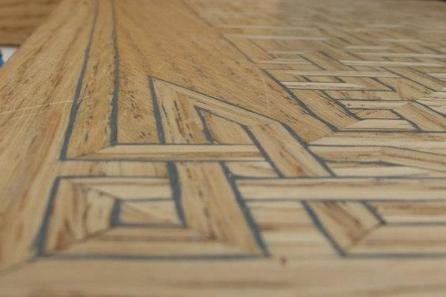

(Damiano di Antoniolo de Zambelli) (circa 1480–1549) was an Italian artist and Dominican monk, mainly known for his wood-engraving and intarsia completed in a Renaissance style. Along with Francesco Orlandini, and owing designs to Vignola, Damiano completed the wood panels for the chapel once found in the Château de la Bastie d'Urfé in France, now in Metropolitan Museum of New York.[1] He also completed the wooden choir stalls for San Domenico in Bologna.
Intarsia is a form of wood inlaying that is similar to marquetry. The technique of intarsia inlays sections of wood (at times with contrasting ivory or bone, or mother-of-pearl) within the solid stone matrix of floors and walls or of table tops and other furniture; by contrast marquetry assembles a pattern out of veneers glued upon the carcase. It is thought that the word 'intarsia' is derived from the Latin word 'interserere' which means "to insert".

Intarsia is a woodworking technique that uses varied shapes, sizes, and species of wood fitted together to create a mosaic-like picture with an illusion of depth. Intarsia is created through the selection of different types of wood, using their natural grain pattern and color (but can involve the use of stains and dyes) to create variations in the pattern.
After selecting the specific woods to be used within the pattern, each piece is then individually cut, shaped, and finished. Sometimes areas of the pattern are raised to create more depth. Once the individual pieces are complete, they are fitted together like a jig-saw puzzle and glued to wood backing which is sometimes cut to the outline shape of the image. (from http://en.wikipedia.org/wiki/Intarsia)
Intarsia is a woodworking technique that uses varied shapes, sizes, and species of wood fitted together to create a mosaic-like picture with an illusion of depth. Intarsia is created through the selection of different types of wood, using their natural grain pattern and color (but can involve the use of stains and dyes) to create variations in the pattern. After selecting the specific woods to be used within the pattern, each piece is then individually cut, shaped, and finished. Sometimes areas of the pattern are raised to create more depth. Once the individual pieces are complete, they are fitted together like a jig-saw puzzle and glued to wood backing which is sometimes cut to the outline shape of the image, often with the intention of creating a three-dimensional effect as seen in the studiolo of the Palazzo Ducale, Urbino.
Marble intarsia (opere di commessi), called pietre dura in English for the semi-precious hardstones combined with colored marbles that are employed, is an intarsia of coloured stones inlaid in white or black marble. Early examples in Florence date from the mid fifteenth century and reached a peak of refinement and complexity in revetments of the Medici Chapel, produced under Medici patronage in the Opificio delle Pietre Dure, which was established by Ferdinando I de’ Medici. Later complex designs and refinement of the art developed in Naples circa the beginning of the 17th century. The floor of St. Peter's Basilica in Rome is a particularly notable example of marble intarsia. Later this form of decoration became a feature of baroque interior design, particularly so in the Sicilian Baroque designs following the earthquake of 1693.
Today intarsia can be made from purchased patterns. To make intarsia from a pattern, first wood is chosen based on color and grain pattern. Next the pattern is transferred onto the wood and individual pieces are precisely cut out on the band saw or scroll saw. Those pieces are then sanded individually or in groups to add depth to the piece. Once the sanding is completed, the wood pieces are fitted together to form the final result. A finish (for example a clear gel stain) can be applied to the individual pieces before gluing, or to the glued final version.
Intarsia is also used to refer to a similar technique used with small, highly polished stones set in a marble matrix also called pietre dure.